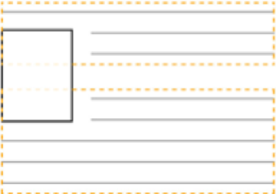
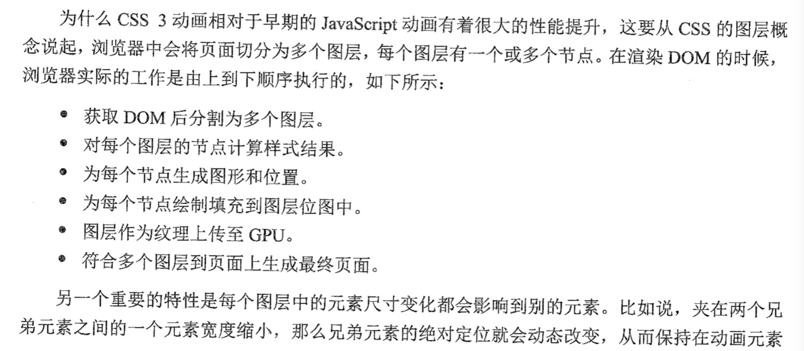
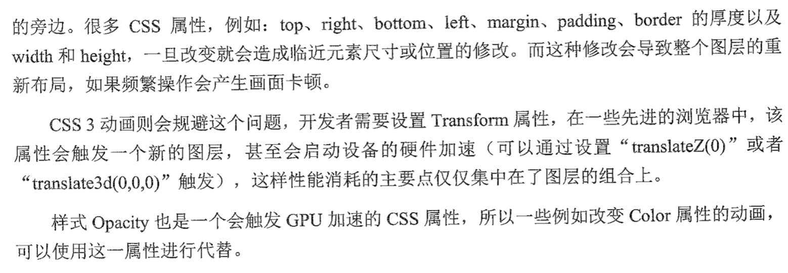

- 各种css图形
图形隐藏下载对比 - 媒体查询中的not 是针对整个查询条件，而非not后的第一个条件
-
水平居中新解
position: absolute; left: 50%; transform: translateX(-50%); translateX使用%是以该元素自身的宽度为基准进行换算和移动的，所以元素的宽度即使不固定，也能实现水平居中，达到元素自适应内容的效果。垂直居中
多行 文本垂直居中分2种；不固定高度的直接设置padding即可实现； 1)固定高度可以设置展示位table; 2)固定宽高，可使用绝对定位，top:50%,margin-top:-50%; 3)不固定宽高，top:50%;transform:translateY(-50%) 4)flex;父元素flex;子元素要设置margin:auto,则水平，垂直方向都会居中，否则使用flex-item的属性设置；更多方法参考 -
float

floats are intended to allow text to wrap around them. When you float an image inside a paragraph, the para- graph does not grow to contain the image. This means, if the image is taller than the text of the paragraph, the next paragraph will start immediately below the text of the first, and the text in both paragraphs will wrap around the float. The clear: both declaration causes this element to move below the bottom of floated elements, rather than beside them. You can give this property the value left or right to clear only elements floated to the left or right, respectively. Because this empty div itself is not floated, the container will extend to encompass it, thereby containing the floats above it as well.
-
linear-gradient
You can specify the angle of the gradient in several ways. You can even specify a corner such as to bottom right; in which case, the gradient will begin at the top-left corner of the element and blend to the bottom-right corner. For more precise control of the angle, you can use more specific units, such as degrees. The value 0deg points straight up (equivalent to to top); higher values move clockwise around the circle, so 90deg points to the right, 180deg points down, 360deg points up again. Thus, this is equivalent to the previous example. If you place two color stops at the same position, the gradient’s color will instantly switch from one to the other, rather than a smooth transition.Degrees are the most common unit, but there are a few others that you can use to indicate angle: 1. rad—Indicates radians. One full circle is 2, or roughly 6.2832 radians. 2. turn—Indicates the number of full turns around the circle. One turn equals 360 degrees (360deg). Use decimal values to represent less than one full turn: 0.25turn, for example, is equal to 90deg. 3. grad—Indicates gradians. One full circle is 400 gradians (400grad) and 100grad equals 90deg. - When you apply multiple background images, those listed first render in front of those listed afterward. But if you’ve added two images, you’ll likely want the second image to show through. You can do this by using a blend mode. 先罗列的显示在前面；
-
BFC
A block formatting context (sometimes called a BFC) is a region of the page in which elements are laid out. A block formatting context itself is part of the surrounding document flow, but it isolates its contents from the outside context. This isolation does three things for the element that establishes the BFC: 1. It contains the top and bottom margins of all elements within it. They won’t collapse with margins of elements outside of the block formatting context. 2. It contains all floated elements within it. 3. It doesn’t overlap with floated elements outside the BFC. Put simply, the contents inside a block formatting context will not overlap or interact with elements on the outside as you would normally expect. If you apply clear to an element, it’ll only clear floats within its own BFC. And, if you force an element to have a new BFC, it won’t overlap with other BFCs. You can establish a new block formatting context in several ways. Applying any of the following property values to an element triggers one: 1.float: left or float: right—anything but none 2.overflow: hidden, auto, or scroll—anything but visible 3.display: inline-block, table-cell, table-caption, flex, inline-flex, grid, or inline-grid—these are called block containers. 4.position: absolute or position: fixed -
inherit
Sometimes, you’ll want inheritance to take place when a cascaded value is preventing it. To do this, you can use the keyword inherit. You can override another value with this, and it will cause the element to inherit that value from its parent. -
initial
Sometimes you’ll find you have styles applied to an element that you want to undo. You can do this by specifying the keyword initial. Every CSS property has an initial, or default, value. If you assign the value initial to that property, then it effectively resets to its default value. It’s like a hard-reset of that value -
top-right-bottom-left
Specify three values, and the left and right side will both use the second one. -
top-right-bottom-left
Specify three values, and the left and right side will both use the second one. -
Defining a custom property
:root { --main-font: Helvetica, Arial, sans-serif; } This listing defines a variable named --main-font, and sets its value to a set of common sans-serif fonts. The name must begin with two hyphens (--) to distinguish it from CSS properties, followed by whatever name you’d like to use. Variables must be declared inside a declaration block. I’ve used the :root selector here, which sets the variable for the whole page. By itself, this variable declaration doesn’t do anything until we use it. Again, you’ve defined the variables inside a ruleset with the :root selector. This is significant because it means these values are set for everything in the root element (the entire page). When a descendant element of the root uses the variables, these are the values they’ll resolve to.A function called var() allows the use of variables.
p { font-family: var(--main-font); } The var() function accepts a second parameter, which specifies a fallback value. If the variable specified in the first parameter is not defined, then the second value is used instead. -
Here are ways to prevent margins from Collapsing outside a container:
- Applying overflow: auto (or any value other than visible) to the container prevents margins inside the container from collapsing with those outside the container. This is often the least intrusive solution.
- Adding a border or padding between two margins stops them from collapsing.
- Margins won’t collapse to the outside of a container that is floated, that is an inline block, or that has an absolute or fixed position.
- When using a flexbox, margins won’t collapse between elements that are part of the flex layout. This is also the case with grid layout .
- Elements with a table-cell display don’t have a margin, so they won’t collapse. This also applies to table-row and most other table display types. can use border-spacing instead. Exceptions are table, table-inline, and table-caption.
-

原图来源：https://www.w3cplus.com/javascript/offset-scroll-client.html
-

